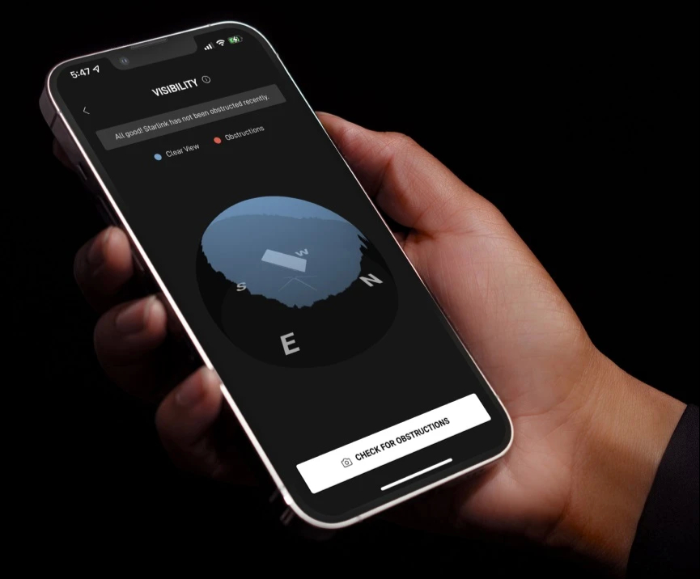

Starlink provides high-speed, low-latency broadband internet across the globe. Within each coverage area, orders are fulfilled on a first-come, first-served basis.
With Starlink, users can engage in activities that historically have not been possible with satellite internet.
Starlink’s high-speed, low-latency service is made possible via the world’s largest constellation of highly advanced satellites operating in a low orbit around the Earth.
EASY SELF-INSTALL
Your Starlink Kit arrives with everything you need to get online in minutes including your Starlink, WiFi router, cables and base.
Click here to view Starlink technical specifications.
NO CONTRACTS, 30-DAY TRIAL
Long term contracts prevent both parties from making sensible changes when necessary.
With Starlink, it’s a fair deal both ways. Starlink can adjust terms and pricing as needed, and customers can cancel at any time, for any reason.
Try any Starlink Service for 30 days and, if not satisfied, return the hardware for a full refund.
TRAVEL WITH STARLINK
Starlink users can take the same high-speed low latency service they have at home to any location Starlink offers service with the Portability add-on.
For those looking to live on the road, Starlink Roam allows users to pause and un-pause service based on their individual travel needs.

MANAGE STARLINK ON THE MOBILE APP
The Starlink app helps you customize settings, receive updates, access Support, and see real time performance data like download speed, latency, and uptime.
Download the app to determine the best set up location before install. Starlink needs a clear view of the sky to connect to satellites.
CUSTOMER-QUOTES
“It’s an entirely different world...Before Starlink we had to ration data and we couldn’t stream. Now we have files downloading, Pandora playing, Zoom going and there’s no latency whatsoever.”
- William D. from Colorado, USA
“Absolute game changer! There’s no overpromising and underdelivering like our old slow provider. Plug it in and show Dishy the sky, that’s it! In under 5 minutes we’ve gone from the forgotten to having the fastest internet connection in the area.”
“Millions are not connected to the Internet — we're thrilled to say that we're no longer among them. Blistering fast and online in minutes, Starlink ends a six-year journey.”
- Neil V. from New South Wales Australia